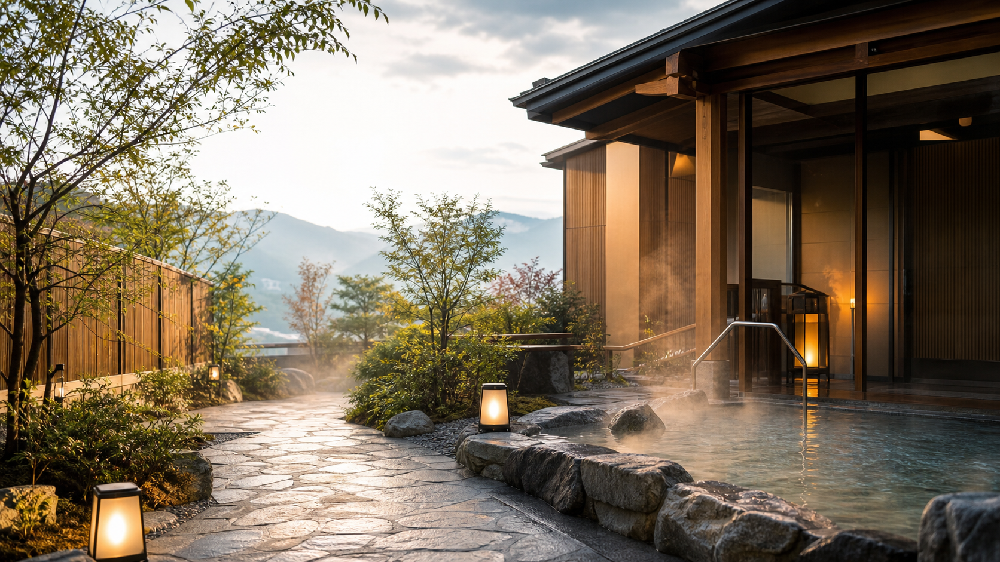
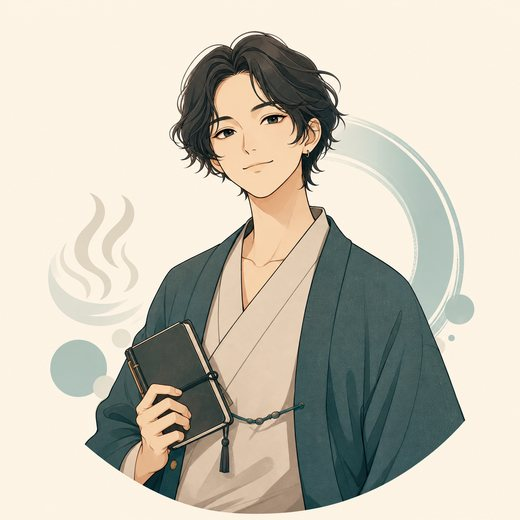

おすすめ施設
森ノ湯テラス
緑に囲まれた露天風呂と、広めの休憩スペースがある日帰り温泉。 仕事帰りにも休日の小旅行にも選びやすい一軒です。
露天風呂
サウナ
駐車場あり
ひとり時間
- 所在地
- 愛知県名古屋市
- 営業時間
- 10:00 - 23:00
- 料金
- 大人 980円
- 外部情報
- 公式サイト・SNSへリンク

温泉・サウナ・銭湯を、今の気分から
あなたの街の温浴施設を、スパ人がご案内します。 近くでも、少し遠くでも、今の気分に合う一湯へ。
SPAZINE GUIDE
3件をおすすめ中
悩みや気分をそのまま入力してください。
スパ人が、施設・お風呂・入り方まで面白おかしく提案します。

湯守ナビ
あなたの属性と悩みに合わせて、話しやすそうな案内役が出てきます。
今日の湯処方
まずは今の悩みや気分を入れてください。スパ人が、あなたの状態を勝手に深読みして湯の処方を出します。
AREA SEARCH
都道府県、市区町村、施設名からの検索導線も残し、提案型の入口と併用できる構成です。
FACILITY DETAIL
おすすめ施設
緑に囲まれた露天風呂と、広めの休憩スペースがある日帰り温泉。 仕事帰りにも休日の小旅行にも選びやすい一軒です。
JOURNAL
施設運営
楽しみ方
地域紹介
ABOUT
スパ人は、温浴施設の清掃事業に携わってきた環境システム社が運営するポータルサイトです。 施設と利用者のあいだに、心地よい出会いが増えるきっかけをつくります。